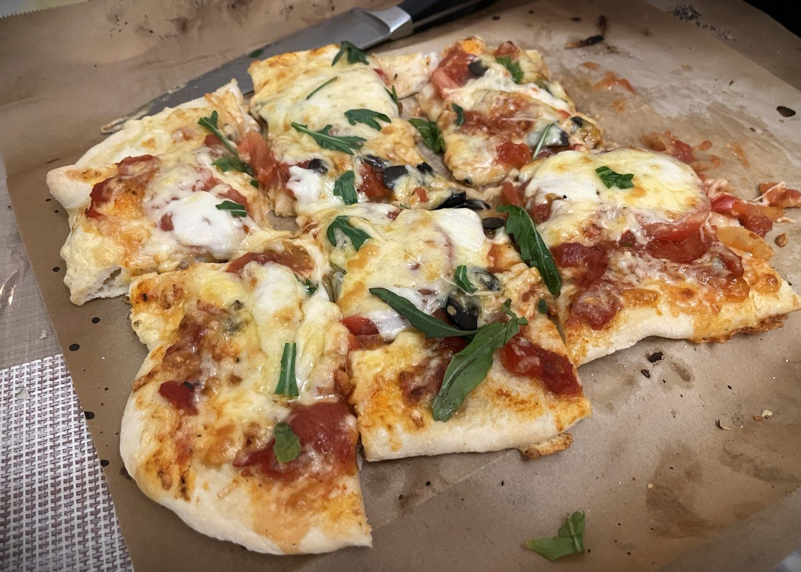

Пицца¶
{kind=link}

Быстрая и простая домашняя пицца — рецептура рассчитана на 4 тонких пиццы.
Инвентарь¶
- Две большие миски
- Весы
- Противень или камень для пиццы
- Пекарская бумага
- Терка для сыра
Ингредиенты¶
Для теста (на 4 пиццы):
- Мука1 600 г
- Тёплая вода 400 г (мл) — не горячая, около 30–35°C
- Быстрые дрожжи2 6 г (если используешь свежие дрожжи — ~18 г)
- Щепоть соли (примерно 1/2 ч. л.)
- Оливковое масло 3 ст. л. (по желанию)
Для начинки (пример):
- Моцарелла3 300–400 г
- Полутвердый сыр 100 г (для усиления вкуса)
- Томатный соус 200–300 г
- Оливковое масло для смазывания
- Сушёный орегано по вкусу
- Дополнительно: базилик, помидоры, ветчина, грибы и т. п.
Способ приготовления¶
Формула состава пиццы простая: тесто + соус для основы + начинка. Дальше про каждый этап подробнее.
Тесто¶
Один из самых любимых рецептов теста - это рецепт теста от итальянской синьоры. Сохраню его здесь, чтобы не потерять.
- Просеиваем муку с дрожжами и солью в миску или чашу миксера. Если сита нет, можно перемешать вилкой. Но лучше просеять. Насыщение муки кислородом дает ей воздушность и помогает дрожжам. Вливаем теплую воду, затем оливковое масло. Если есть миксер - замечательно, замешиваем им, если нет, то начинаем работать руками.
- Замешивать руками это тесто не сложно. Оно мягкое, теплое и поддатливое. Не добавляй воду! Сначала это будет неаккуратный комок, который даже может не вобрал в себя всю муку из миски. Но мы присыпаем поверхность мукой, аккуратно все выгребаем и начинаем мешать. Буквально через минуту тесто будет становиться все более гладким и красивым.
-
Мешаем вот так: вытягиваем тесто, складываем пополам и основанием ладони прокатываем вперед. Этим движением ты частично заменишь миксер. Много муки не добавляй, тесто не слишком липнет к поверхности. Вмешиваем минут 5-7. Если поверхность теста (комка) начнет рваться - пора остановиться. Вообще миксером можно было бы сделать круче и еще более гладким, но так тоже ничего. Сейчас тесто по размеру примерно как 1,5 кулака. Большую миску смазываем слегка оливковым маслом, перекладываем туда тесто, накрываем пленкой или хотя бы полотенцем и убираем в сухое теплое место. Я просто ставлю в выключенную духовку. Сверху можно присыпать мукой, чтобы не заветривалось.
Оставляем на 45 минут. Тесто увеличивается в размере. Оно упругое, но мягкое, не сдувается при нажатии, а лишь прогибается под пальцами.
-
Делим на 4 части, формируем шарики, кладем их на бумагу на противень, оставляя расстояние. Подпыляем мукой, накрываем и еще на 40 минут расстаиваться. Тесто увеличится раза в два-три.
Дальше выбираем соус.
Соус для основы¶
Я чаще всего использую один из трех соусов для основы:
- Томатный соус
-
протертые томаты + лук + помидор + соль + базилик + орегано
Обжарить лук на сковороде, добавить порезанный помидор. Затем влить протетрые томаты , добавить специи. Охладить перед использованием.
- Альфредо
-
твердый сыр + сливки + сливочное масло + чеснок
В сотейнике смешать масло со сливками, погреть, затем добавить сыр.
- Оливковое масло
-
Просто смажь тесто маслом и накидывай начинку.
Подробные рецепты можно найти в интернете.
Начинка¶
Здесь можно разгуляться на свой вкус. Мои самые любимые начинки:
- Груша и горгонзола (оливковое масло / альфредо)
- Четыре сыра (оливковое масло / альфредо)
- Ветчина и перепелиное яйцо (томатный соус / альфредо)
- Маргарита (томатный соус)
- Прошутто и руколла (томатный соус)
- Ветчина и грибы (томатный соус)
- Пепперони (томатный соус)
Готовим пиццу¶
Скалка не нужна. Мы пальцами проминаем шар по кругу, делая его плоским, а затем также, разминая края, поднимаем над столом и быстро крутим, давая тесту растягиваться под собственным весом. Затем кладем обратно на стол и ровняем пальцами вновь, старая придать пицце хоть немного форму круга:)
Не делай тесто уж слишком прозрачным, иначе будет слишком влажно от соуса и оно может просто прогибаться и рваться после выпекания. Края не должны быть толстыми, они и так поднимутся, сделай их немного толще, чем основная часть.
Выкладываем соус. Не жадничай, пусть остаются полупрозрачные места. Соуса будет достаточно. От краев оставляем допуск по сантиметру.
Выкладываем начинку. Затем кладем сыр и тоже не жадничаем, иначе наша пицца просто не выдержит веса!
Есть такая фраза: “пицца - дитя огня”. Она на 100% отображает всю суть этого блюда. В идеале пицца готовится в печке, где температура более 400 градусов. Обычные же домашние духовки редко нагреваются больше чем на 250. Этого достаточно для приготовления, но хрустящих корочек в тандеме с мягкой серединкой нам не видать, увы. Как и небольших опалин от огня, которые так любимыми многими в неаполитанской пицце.
Но мы все равно попробуем. Включи духовку на максимальную температуру и пусть она нагревается вместе с противенем. Прогреваем минут 20, не меньше. Нам нужно, чтобы пицца начала готовиться сразу же!
Моцареллу рвем прямо руками, дальше добавляем немного полутвердого сыра, посыпаем орегано. Достаем горячий противень из духовки, стремительным движением укладываем на него пиццу и тут же отправляем обратно, на самую верхнюю полку.
В духовке пицца проведет 6-8 минут, не больше! Никаких 20 минут! Края останутся белыми, но пропекутся. Добиваемся небольшой румяности и хрусткости.
Даем пицце немного остыть, всего пару минут, чтобы она слегка схватилась и не была такой горячей. Руби на куски и ешь.
Очень мягкое, очень вкусное тесто. Нежное, пористое, немного тягучее…
Приятного аппетита!
-
Мука. Самый важный аспект хорошей пиццы. Для пиццы в Италии используют “сильную” муку. Она не то чтобы какая-то специальная. Просто она содержит в себе минимум 12г белка. Именно из такой муки мы получаем гладкое, прочное и эластичное тесто. Просто посмотри на состав и ищи значение у белка/протеина. ↩
-
Дрожжи. Дрожжи можно взять любые, главное не старые. И запомни, если ты открыл пакетик с сухими дрожжам и не весь его использовал, то нужно сделать это в ближайшее время. Уже буквально через пару дней эти дрожжи станут негодными и слабыми. Если ты взял свежие дрожжи, то их лучше предварительно развести в воде, которая идет в тесто. ↩
-
Сыр. Моцарелла сейчас есть не только в шариках. Нам подойдут специальные брикеты для пиццы. ↩
-
Хранение. Это тесто можно легко заморозить. После того, как ты поделил тесто и сформировал из него шарики - заморозь часть. У тебя всегда будет про запас готовое тесто!Также можно сразу заморозить раскатанную основу. Все что вам нужно будет потом - это с утра заранее достать тесто, убрать его в миску под пленку и дать разморозиться и подняться. ↩